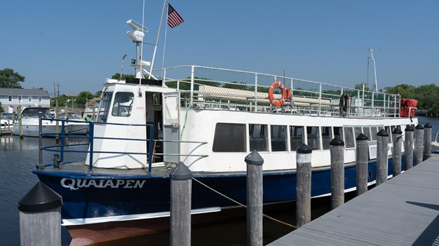

Gallery: Fire Island


- 
Fire Island National Park offers a refreshing and immersive coastal escape that feels worlds away from the busy mainland. The moment you arrive, you're welcomed by miles of pristine shoreline, rolling dunes, and the calming sound of the Atlantic. Whether you come for a day trip or a longer stay, the park’s peaceful atmosphere makes it easy to unwind and reconnect with nature./p>
One of the highlights of the park is its incredible variety of landscapes.
You can explore the shaded pathways of the Sunken Forest, walk along
boardwalks that wind through maritime holly trees, or trek across open
dunes that offer breathtaking ocean views. Each area has its own charm,
giving visitors a chance to enjoy diverse outdoor experiences without
traveling far.
Key Highlights:
Pristine beaches and scenic dune systems
The unique, shaded Sunken
Forest
Historic Fire Island Lighthouse
Peaceful boardwalk trails and nature
walks
Wildlife viewing opportunities, including deer and bird
species
Fire Island is also rich in history and natural beauty, adding depth to every visit. Whether you're hiking, sightseeing, or simply relaxing by the ocean, the park’s mix of coastal landscapes, wildlife, and heritage sites creates memorable moments that stay with you long after your trip ends.
Fire Island National Park is the perfect escape for anyone seeking natural beauty, peace, and adventure all in one place. With its pristine beaches, breathtaking dunes, and vibrant wildlife, it offers a refreshing break from busy city life. Whether you love hiking, relaxing by the ocean, or exploring historic sites like the Fire Island Lighthouse, there’s something for everyone. A visit to Fire Island promises unforgettable sunsets, fresh coastal air, and a chance to reconnect with nature. Plan your trip today and experience the magic of this stunning island sanctuary!
Plan your National Park adventure today!